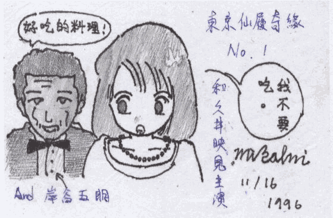
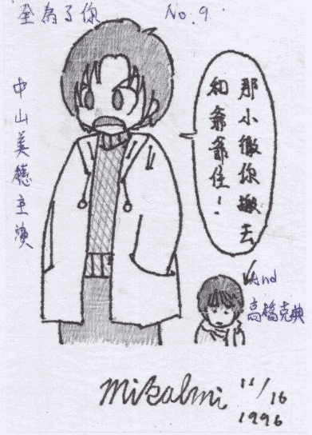
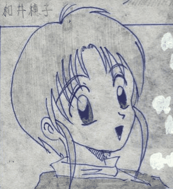
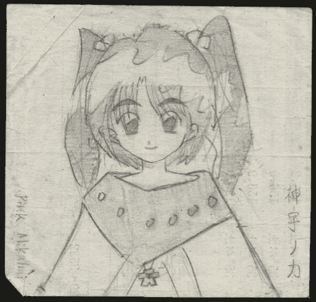
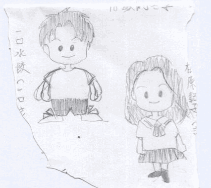

曾經想當漫畫家
整理書桌抽屜時，發現國中時期留下的東西，這才想起，國中時我想當漫畫家…
掃描圖檔





感想
我完全忘了曾經畫過漫畫這件事…是從什麼時候開始忘的呢？
幸好沒走上漫畫家這條路，我根本沒有美工天份，比較適合程式設計…雖然國中時壓根沒想過我會寫程式。
但國小時，我其實「抄」過一份 Quick Basic 程式！當時，學校剛設立圖書室，為了養成學生閱讀課外讀物的習慣，老師帶全班到圖書室看書。我看的是電腦雜誌，裡面有篇程式設計教學，教人怎麼自己寫小蜜蜂來玩：「長大後如果有電腦的話，只要輸入這些『密碼』就能玩這個遊戲了。」於是天真的抄下來。
但下課鐘響了還沒抄完，只好放棄。其實抄完也沒用，當時我還不會英文字母，哪裡抄錯也不知道，只是浪費時間罷了 :)